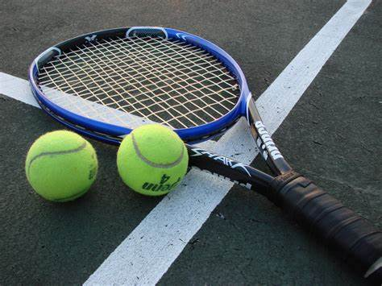
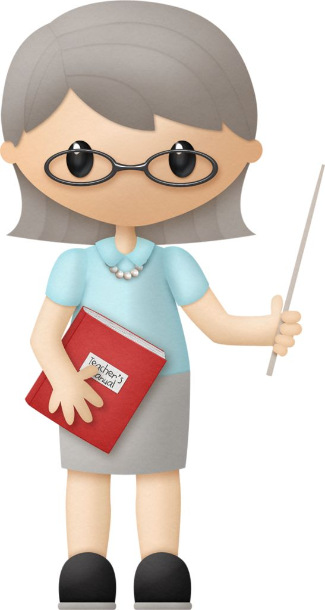

Friends are essential parts of the community since if no one had any, there would be no community.
EPS has a variety of sports, and being a part of the team creates more community. I enjoy playing on the Tennis team the most.
Clubs are student-made, and when people join under common interests, community is formed. Clubs at EPS can range from business, to badminton, and even building an actual car.
Teachers at EPS are a big part of the community and help you to be the best version of yourself, in different subjects or overall.
